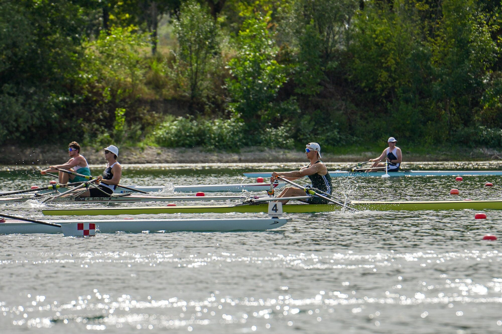

Overview
From the six seat to the single
I started rowing about two years ago, at first simply to keep fit. A first season in the six seat of the university eight became a second season in the single scull, and the sport quickly became serious.
I now train with Odense Roklub's U23 programme as a member of Syddansk Elite, combining water sessions, ergometer work and three lifting sessions a week. The aim is the Danish national-team selection for 2027.
1x
Main boat class
12
Sessions a week
2027
National-team target
Racing
Calendar and results
Races move from the calendar into the results automatically once their date has passed.

Upcoming
{{r.date}}
{{r.name}}
{{r.detail}}
Results
| Date | Event | Boat | Result |
|---|---|---|---|
| {{r.date}} | {{r.name}} | {{r.boat}} | {{r.result}} |
Personal bests
On the ergometer
{{b.label}}
{{b.value}}
{{b.when}}
Twenty-five seconds in twenty months
The next mark is a 2k under 6:15, with test weeks in November and March and the Danish indoor championships in January.
Training log and stats
This week on the water
Erg · Concept2, synced
Water · NK SpeedCoach, uploaded
Distance this week
[— km]
Sessions
[—]
Average split
[—/500 m]
Time in UT2
[— %]
| Date | Where | Session | Distance | Avg split | Avg HR |
|---|---|---|---|---|---|
| {{s.date}} | {{s.where}} | {{s.name}} | {{s.distance}} | {{s.split}} | {{s.hr}} |
Headline figures are public; detailed heart-rate files stay private in the admin area.